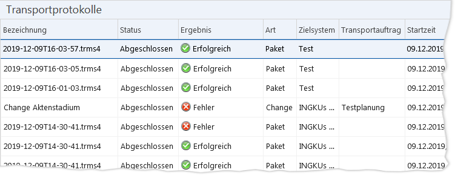

Symbol
Schaltfläche
Beschreibung

„Filtern“
[Leertaste]
Ruft den Filterdialog für die Auswahlliste auf.

„Aufheben“
[Strg] + [R]
Hebt die aktuellen Filtereinstellungen auf.

„Sichten“
[F6]
Ruft den Verwaltungsdialog für benutzerdefinierte Sichten auf.
Zusammenhänge
Für jeden Transport in ein IKAROS-Zielsystem, den Sie mit dem TRMS durchführen, wird ein Protokoll angelegt. Dieses enthält die Ergebnisse zum Übertragungsprozess des Pakets in das Zielsystem sowie der dortigen Installation der Artefakte.
Die Liste der Transportprotokolle
Sie finden die Liste der Transportprotokolle im Menüpunkt „Transportprotokolle“.

Abb. 33: Menüpunkt „Transportprotokolle“
Schaltflächen
|
Symbol |
Schaltfläche |
Beschreibung |
|
|
„Filtern“ [Leertaste] |
Ruft den Filterdialog für die Auswahlliste auf. |
|
|
„Aufheben“ [Strg] + [R] |
Hebt die aktuellen Filtereinstellungen auf. |
|
|
„Sichten“ [F6] |
Ruft den Verwaltungsdialog für benutzerdefinierte Sichten auf. |